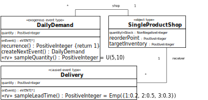
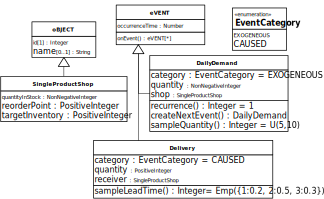

A shop is selling one product type only (e.g., one model of TVs), such that its in-house inventory only consists of items of that type.
On each business day, customers come to the shop and place their orders. If the ordered product quantity is in stock, the customer pays
for the order and the ordered items are provided. Otherwise, the shop has missed a business opportunity and the difference between order quantity
and the inventory level counts as a lost sale. The order may still be partially fulfilled, if there are still some items in stock,
else the customer has to leave the shop without any item. The percentage of lost sales is an important performance indicator.
Whenever the stock level falls below a certain threshold (called reorder point), the shop places a replenishment order
with a quantity computed as the difference between an upper threshold (called target inventory) and the current stock level.
Background
Inventory management is one of the big topics in Operations Research,
which is a scientific discipline that develops mathematical/analytical methods for decision-making in various application domains.
The goal of inventory management is to satisfy demand and avoid stock-out events, while minimizing inventory costs.
Too much inventory incurs unnecessary holding costs (and capital costs). Not having enough inventory results in stock-outs,
impacting the ability to manufacture goods or provide customers with products.
In fact, stock-outs may result in loss of:
Revenue
Gross profit
Customers
Market share
There are two different replenishment policies used in inventory management:
The continuous replenishment policy is based on a reorder point, such that a new replenishment order
is issued whenever the stock level falls below the reorder point.
The periodic replenishment policy is based on a reorder interval, such that new replenishment orders
are periodically issued whenever the reorder interval time has passed.
For achieving a certain service level, the reorder point has to be set accordingly. A common approach for setting
the reorder point (RP) is based on the concept of safety stock (SS), which is extra inventory beyond the
expected lead time demand ELTD (the expected daily demand multiplied by the expected lead time in days):
RP = ELTD + SS, with ELTD = E(D) ∗ E(LT)
Now the question is how to compute the safety stock (on the assumption that both lead time and demand vary independently)?
A simple approach (the “max – average” method) is to deduct the expected lead time demand from the maximum lead time demand MLTD:
SS = MLTD - ELTD, with MLTD = E(D) ∗ max(LT),
which implies that RP = MLTD.
However, this simple approach does not allow taking a target service level into account.
A more sophisticated method is based on a target service level:
SS = Z ∗ Sqrt( E(LT) ∗ Var(D) + E(D)2 ∗ Var(LT))
Here, Sqrt() stands for the square root operation, Var() for the statistical variance (being the square of the standard deviation), and Z represents the "Z-score", which allows taking a target service level into
account. The following table allows determining the Z-score from the target service level.
Target service level
90%
91%
92%
93%
94%
95%
96%
97%
98%
99%
Z-Score
1.28
1.34
1.41
1.48
1.55
1.64
1.75
1.88
2.05
2.33
Typically, a target service level of 95%, and hence a Z-score of 1.64, is used, but the choice may depend on the type of product.
Simulation Design
For simplicity, customer orders are treated in an abstract way by aggregating all customer orders during a business day
into a daily demand event, such that the random variation of the daily order quantity is modeled by a random variable.
Likewise, the random variation of the delivery lead time, which is the time in-between a replenishment order
and the corresponding delivery, is modeled by a random variable.
Information Design Model
The random variation of the lead time between a replenishment order and the corresponding delivery
is modeled by a random variable with a uniform probability distribution between 1 and 3 days.
The inventory is modelled as an object with three attributes: productQuantityInStock,
reorderPoint and targetInventory. For simplicity, the model does not create
replenishment order events, but instead it only schedules corresponding delivery events.
Consequently, we model just one object type: SingleProductShop, with three attributes
quantityInStock (NonNegativeInteger), reorderPoint (NonNegativeInteger),
and targetInventory (PositiveInteger). In addition, we model two event types:
DailyDemand as an exogeneous event type with one attribute: quantity (PositiveInteger),
and with the random variable function sampleQuantity and, as an exogeneous event type,
with a recurrence function.
Delivery as a caused event type with one attribute: quantity (PositiveInteger),
and with the random variable function sampleLeadTime.

An information design model describing object types and event types.
When the design model is implemented with an object-oriented programming language or framework,
the participation associations between DailyDemand and SingleProductShop, as well as
between Delivery and SingleProductShop, are represented with the corresponding
reference properties shop and receiver. This is also the case when using the Object Event
Simulation (OES) framework OESjs available from Sim4edu,
where all object types are derived from the pre-defined OES category oBJECT
and all event types are derived from the pre-defined OES category eVENT,
as shown in the following diagram:

An OES class model showing the pre-defined types oBJECT and eVENT.Process Design ModelA process design model.
A DPMN process design model can be decomposed into a set of event rule design
models, one for each type of event specified in the design model.
Event rule design table.
ON (event type)
DO (event routine)
DailyDemand( demQuant) @ t
IF demQuant <= shop.quantityInStock
THEN
IF shop.quantityInStock − demQuant < shop.reorderPoint AND
shop.quantityInStock > shop.reorderPoint
THEN
SET ordQuant TO shop.targetInventory −
shop.quantityInStock - demQuant
SCHEDULE Delivery( ordQuant) @ t + sampleLeadTime()
DECREMENT shop.quantityInStock BY demQuant
ELSE (if demQuant > shop.quantityInStock)
INCREMENT shop.lostSales BY demQuant − shop.quantityInStock
SET shop.quantityInStock TO 0
Delivery( delQuant) @ t
INCREMENT receiver.quantityInStock BY delQuant
IF receiver.quantityInStock <= receiver.reorderPoint
THEN
SET ordQuant TO receiver.targetInventory −
receiver.quantityInStock
SCHEDULE Delivery( ordQuant) @ t + sampleLeadTime()
Implementation with OESjs
The JavaScript-based simulator OESjs implements the Object Event Simulation paradigm, and, consequently, allows a
straight-forward coding of OEM class models and DPMN process models. You can inspect the model's
OESjs code on the OES GitHub repo.
Implementing the Information Design Model
For implementing the information design model, we have to code all object types, event types and activity types specified in the model
in the form of classes.
Implementing the Process Design Model
A DPMN process design model can be decomposed into a set of event rule design
models, one for each type of event specified in the design model.